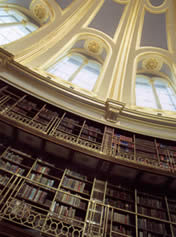

|
|
|
The Museum holds some 350,000 books, offprints, pamphlets and many periodical publications, in libraries spread around the buildings, including the Paul Hamlyn Library, the Museum's Central Library and in many curatorial and departmental libraries. The Museum Archives document the history of the Museum and are designated as public records. Note: The British Museum no longer holds the national collections of printed books, manuscripts and journals. Please contact the British Library unless your enquiry specifically concerns the British Museum and its history and antiquarian and cultural collections.
The Paul Hamlyn LibraryThe Paul Hamlyn Library, the public reference library in the restored Reading Room, is open to everyone who visits the Museum. Funded by The Paul Hamlyn Foundation, the library aims to help visitors find out more about the Museum's collections and the cultures represented here. The subject-matter is very wide-ranging, including archaeology, history, art, architecture and much more, and there is a substantial and developing children's section. The online catalogue can be consulted at terminals in the Reading Room, and it is hoped that it will soon be available over the internet. The library is still growing - some 15,000 of a planned 20-25,000 books have been acquired so far. Photocopying facilities are available. Books may not be borrowed from the Library but are always available for reference during opening hours. Opening hours:
Contacts:
The Central LibraryThe Central Library is the general reference library for museum staff, and members of the public by special arrangement. It must be noted that access to the public is restricted and the library operates as a 'library of last resort'. Started some 20 years ago, it provides books and journals on a wide range of subjects, such as museology and collecting, and scholarly reference works of interest to curators throughout the Museum. The library is particularly strong on the history of the British Museum and holds a copy of every BM publication. There is also a collection of British Museum posters and postcards. Contacts:libraries@thebritishmuseum.ac.uk Joanna Bowring, Head of Libraries and Information, Learning and Information Department: +44 (020)7 323 8491
The Museum ArchivesThe Archives of the British Museum consist of the administrative records of the Museum's Trustees and Directors which have been selected for permanent preservation for their evidential, administrative or research value. These are public records, date from the Museum's foundation in 1753 to the present day and illuminate every aspect of the Museum's official activities including the meetings of its Trustees, its acquisitions, administration, finance, buildings, staff, exhibitions, publications and excavations.Archival material acquired through donation or purchase, and relevant to the history of the Museum and its activities, is also held here. This wide-ranging archive is also a rich visual resource and includes sketches, architectural plans and drawings, scrapbooks, press cuttings and photographs. A selection of images from the Archives will be found on COMPASS.Documentation relating to the history of the British Museum is also held by the British Library. This includes the records of the former British Museum Library departments (prior to the establishment of the British Library in 1973) and collections within the Department of Manuscripts. However, pre-1973 Reading Room records are held by the British Museum. The records of the Office of Works and its successors relating to the development of the British Museum building are held at the Public Record Office at Kew. The Museum Archives section also has responsibility for museum-wide records management under the Head of Archives and Departmental Record Officer. The Museum's curatorial and administrative departments retain their own records. These are also public records but, as yet, do not have archival status.Access to the Museum's Archives is via the Archives Student's Room which is open to the public on Tuesdays (10am-12.45pm & 2pm-4pm) by appointment. Requests for access to departmental records should be sent to the Head(s) of the department(s) concerned. The British Museum is committed to public access to its records in line with current legislation and the Government's policy as set out in the 'Modernising Government' White Paper. The Museum is now actively involved in the PRO's PROcat online cataloguing project and progress to date may be seen through the PRO website.
Further information is available from
|

The Reading Room at the British Museum |
|||||
|
home |
visit |
what's on |
join |
shop |
learning |
COMPASS |
world cultures |
sitemap |
contact us |
copyright
© The British Museum, 2002 |
||||||